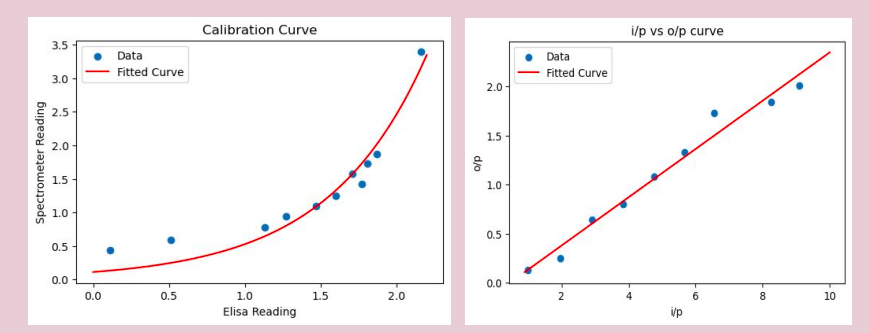

Procedure of Elisa
- Specific antibodies bind the target antigen and remain in the microtiter wells in that state
- Light from a light source of specific wavelength for specific tests gets incident over the samples inside the wells.
- The transmitted light from the well passes and reaches a photo sensor.
- The voltage output from the sensor is processed in an Analog to Digital Converter and converted into Absorbance using Beer Lamberts' Law.
Structure of device
Our device contains three parts- Plate top reader : Holds light source and battery
- Plate reader base: Holds internal circuit and microcontroller
- Lid : Holds the sensor
Calibration
The Curcumine solution was diluted and solutions of different concentrations were made. The solutions were measured simultaneously in a spectrometer and in our elisa reader. A Spectrometer vs elisa reading graph was plotted in Python and curve fitting was applied on it. Then the code was modified using the parameters found from curve fitting and the accuracy was increased. 
Range
The calculated concentration ranges from .99 mg/L to 9.09 mg/L. The output Vs input value was plotted and curve fitted. And the curve fitting was linear, which means our output is proportional to the input. So the whole experimental region of concentration is the range
Accuracy
The device aims to get the exact same results like the spectrometer from our device. The more the p value,the more it indicates our device’s similarity with the spectrometer. P value = 1 means both the devices are exactly similar. Our p value = 0.88 which indicates major similarities thus ensuring our accuracy